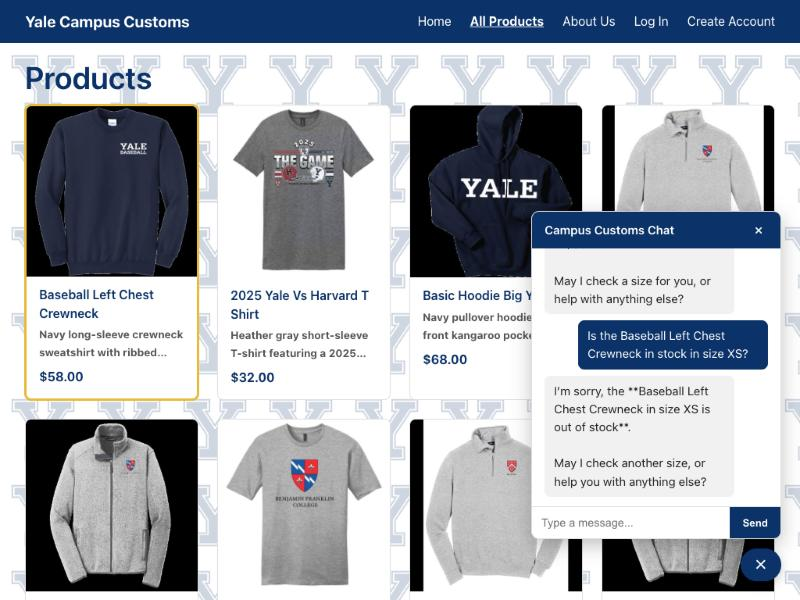
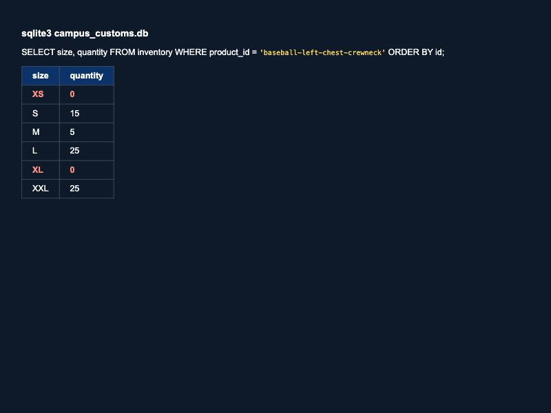
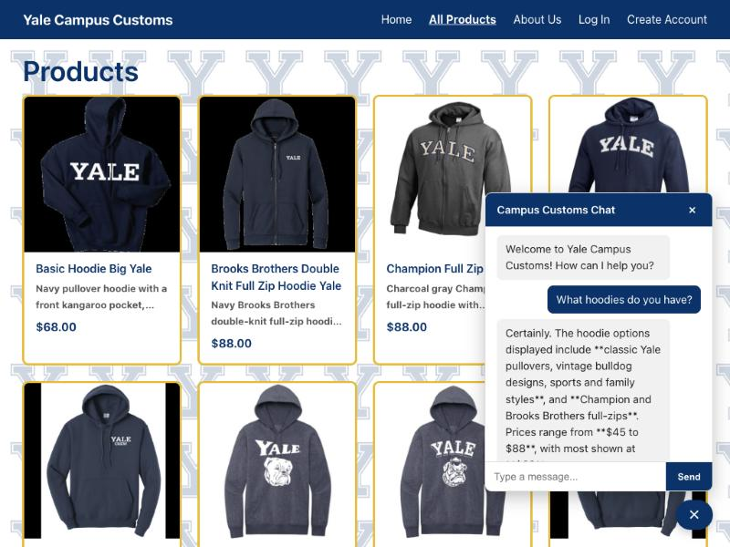
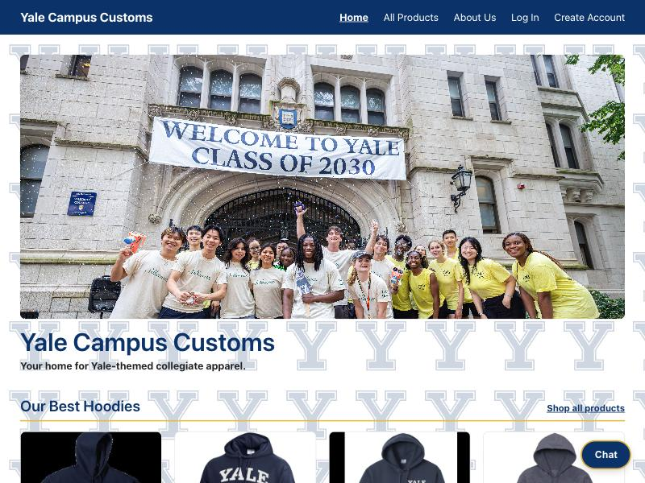

Proves: the chatbot's "out of stock" answer for size XS matches the live database (quantity = 0), not a guess.

Proves: asking about a product category in chat dynamically reorders the All Products page, surfacing and gold-outlining the matching hoodie cards at the top.

Proves: the chat button is outlined in gold as soon as the page opens, to draw the user's attention before they've interacted with it.